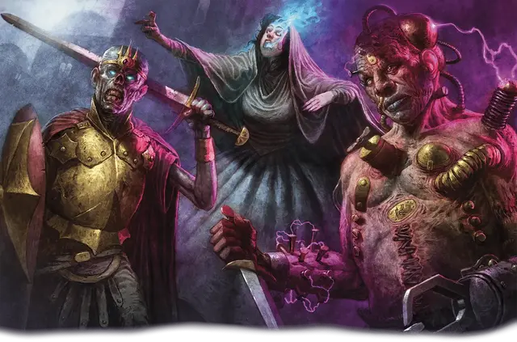

Возрождённый
Reborn

Тип существа Гуманоид
Размер Средний (рост около 4–7 футов) или Маленький (рост около 2–4 футов); выберите при выборе этого вида
Скорость 30 футов
Возрождёнными называют тех, кто умер — но по необъяснимой причине всё же живёт. На некоторых из возрождённых можно увидеть шрамы от смертельных ранений, сгоревшую плоть, вены, по которым не бежит кровь: их вид безусловно говорит, что они были в руках смерти. Однако есть и другие возрождённые; чудеса науки или магии, может быть, сшитые из кусков тел совсем разных существ или вовсе несущие таинственное своё сознание в искусственном теле. Как бы возрождённый не пришёл к новой жизни, в ней они заново ищут жизненный опыт и ответы на вопросы.
Особенности
Вы обладаете следующими особенностями вида:
Избежаши Смерти. Вы совершаете с Преимуществом спасброски от Смерти.
Небренный. Вы не получаете уровней Истощения от обезвоживания, удушения или недоедания. Вам не нужно спать, и магия не может погрузить вас в сон. Вы можете завершить Долгий отдых за 4 часа, если проводите это время без движения и активности. В течение этого времени вы выглядите недвижимо, но сохраняете сознание.
Знание прошлой жизни. Вы получаете владение одним навыком на ваш выбор.
Кроме того, вы можете на время заглянуть в прошлое, чтобы получить помощь в настоящем. Когда вы проваливаете проверку характеристики, вы можете бросить 1к6 и добавить результат броска к результату проверки, что может изменить результат на успех. Вы можете сделать это количество раз, равное вашему Бонусу владения, и вы восстанавливаете все потраченные использования по завершению Долгого отдыха.
Сверхъестественная устойчивость. Вы обладаете Сопротивлением одному из следующих типов урона на ваш выбор: Некротический урон, урон Холодом или урон Ядом.